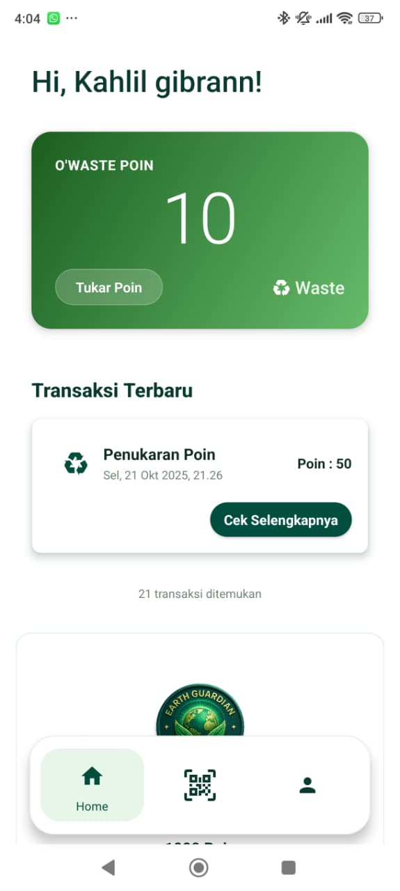
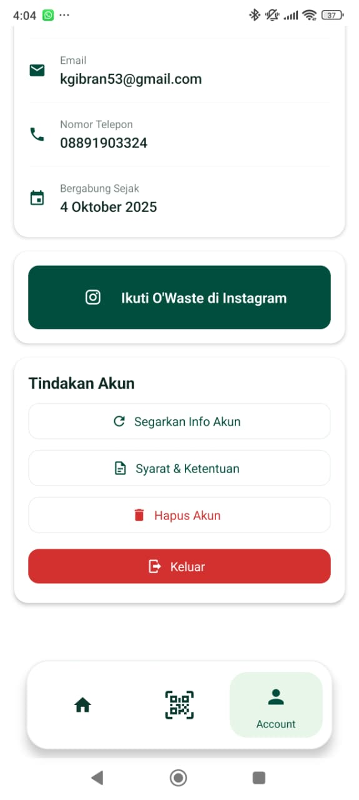
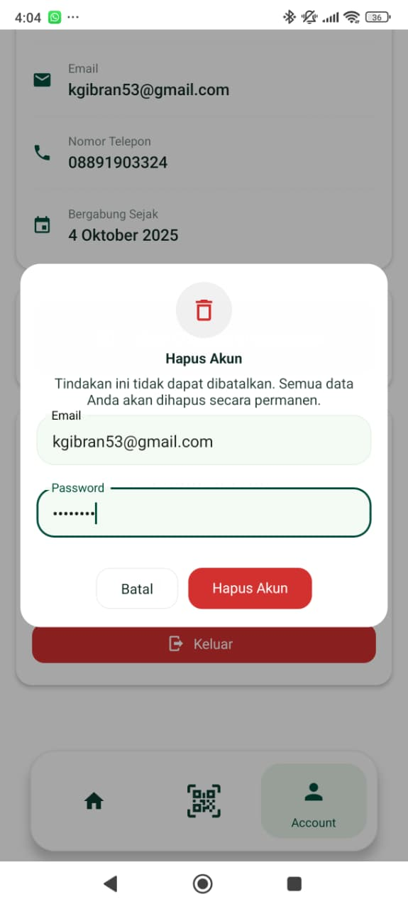

FAQ Penghapusan Akun O'Waste
Panduan ini menjelaskan cara menghapus akun Anda dari aplikasi O'Waste.
Ikuti langkah-langkah berikut untuk menghapus akun Anda:
- Buka aplikasi O'Waste.
 - Pergi ke Pengaturan.
 - Pilih Akun.
 - Pilih Hapus Akun dan ikuti instruksi yang muncul.

Proses penghapusan permanen akan memakan waktu hingga 30 hari.
Ya, semua data pribadi, riwayat penyerahan sampah, dan poin Anda akan dihapus secara
permanen dari server kami setelah proses penghapusan selesai. Kami tidak menyimpan
data Anda setelah akun dihapus.
Anda bisa membatalkan penghapusan akun selama proses belum selesai (dalam 30 hari).
Setelah lebih dari 30 hari, data tidak dapat dipulihkan.
Tidak. Anda dapat menghapus akun Anda sendiri melalui aplikasi. Jika mengalami
kendala, silakan hubungi kami di contact@owaste.id.
Ya, semua poin dan hadiah terkait akan dihapus secara permanen saat akun Anda
dihapus.
⚠️ Hapus Akun
Anda dapat menghapus akun O'Waste Anda secara permanen melalui tombol di bawah ini.
© 2025 O'Waste. Semua hak dilindungi.